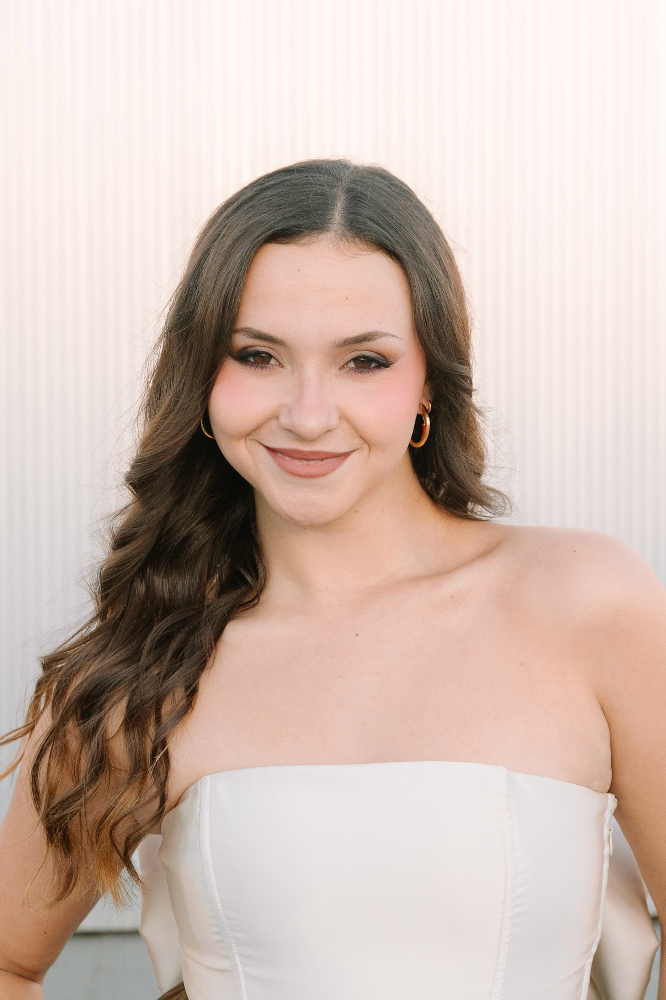

Sobre mi

Cómo ya sabréis soy Celia, una joven que comienza en el mundo de la fotografía. Lo audiovisual siempre me ha gustado, pero por fin he decidido comenzar a tomarlo más en serio. Por ello, a mis 21 años con cuatro de los cinco años del Doble grado de Comunicación Audiovisual y Periodismo cursados, me tiro a la piscina.
Toda mi vida la he dedicado a la danza y todavía sigo en ello, cursando el grado de Pedagogía de la Danza. Creo que por eso me gusta especialmente la fotografía de danza; sin embargo, la encuentro más complicada porque todavía no controlo del todo cómo evitar que las bailarinas salgan borrosas cuando se mueven muy rápido… Por eso, mientras practico, también estoy probando a fotografiar otras cosas.
Hago fotos para divertirme y para ir descubriendo mi propio estilo. De momento, lo que más me atrae son las fotos en blanco y negro. Espero que os haya quedado la intriga de cómo serán mis fotos… Más abajo podéis ver algunas de ellas.
Proyectos
Conservatorio de danza de Alicante
Septiembre 2024

Sesión Alicante
Enero 2025
Autoretratos
Junio 2025
Trabajos
Web developer - Orson.io
Leo vel orci porta non pulvinar neque laoreet suspendisse interdum. Vitae ultricies leo integer malesuada nunc. Imperdiet proin fermentum leo vel orci porta non pulvinar neque. Fermentum leo vel orci porta non. Posuere sollicitudin aliquam ultrices sagittis. Aliquam faucibus purus in massa tempor nec.
Web developer - Mashup Template
Fermentum leo vel orci porta non. Posuere sollicitudin aliquam ultrices sagittis. Aliquam faucibus purus in massa tempor nec.
Educación
ESCAC
Curso en dirección
UMH
Doble Grado en Comunicación Audiovisual y Periodismo
Idiomas
Español Nativo
Inglés Alto
Italiano Medio
Destacado

Conservatorio Superior de Danza
2024

Sesión Alicante
2025

Autoretratos
2025